Mastering GDAL Tools (Course Material)
Satellite and aerial image processing using GDAL tools
Ujaval Gandhi
This course is also offered as a in-person class. Please sign up for my mailing list to know when new sessions are scheduled.
Introduction
GDAL is an open-source library for raster and vector geospatial data formats. The library comes with a vast collection of utility programs that can perform many geoprocessing tasks. This class introduces GDAL utilities with example workflows for processing satellite and aerial imagery.
Get the Data Package
The code examples in this class use a variety of datasets. All the required datasets are available in the gdal_tools.zip [~1.3GB]. Download and unzip this file to the Downloads directory. All commands below assume the data is available in the <home folder>/Downloads/gdal_tools/ directory.
Running GDAL Commands
On Windows, the easiest way to run the gdal commands is via the OSGeo4W Shell. To install GDAL commands, download the OsGeo4W Installer and run Express Install. Once installed, launch the OsGeo4W Shell and cd to the gdal_tools directory.
Note: Many commandline examples are long and span multiple lines. To improve readability, they are separated by ^ character at the end if each line. This is a line continuation character that enables the OsGeo4W shell to interpret it as a single command. If you are running these on Mac or Linux, replace the ^ character with \
Processing Satellite Data
This section shows how to take satellite data from Landsat-8 and create various derived products.
Merging individual bands into RGB composite
gdal_merge -o rgb.tif -separate ^
-co PHOTOMETRIC=RGB -co COMPRESS=DEFLATE ^
landsat8/RT_LC08_L1TP_137042_20190920_20190926_01_T1_2019-09-20_B4.TIF ^
landsat8/RT_LC08_L1TP_137042_20190920_20190926_01_T1_2019-09-20_B3.TIF ^
landsat8/RT_LC08_L1TP_137042_20190920_20190926_01_T1_2019-09-20_B2.TIF
Apply Histogram Stretch and Color Correction
gdal_translate -scale 0 0.3 0 255 -exponent 0.5 -ot Byte ^
rgb.tif rgb_stretch.tif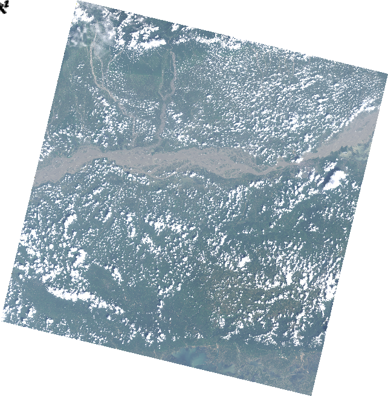
Pan Sharpening
gdal_pansharpen ^
landsat8/RT_LC08_L1TP_137042_20190920_20190926_01_T1_2019-09-20_B8.TIF ^
rgb.tif pansharpened.tif -r bilinear -co COMPRESS=DEFLATE -co PHOTOMETRIC=RGB
gdal_translate -scale 0 0.3 0 255 -exponent 0.5 -ot Byte -a_nodata 0 ^
pansharpened.tif pansharpened_stretch.tif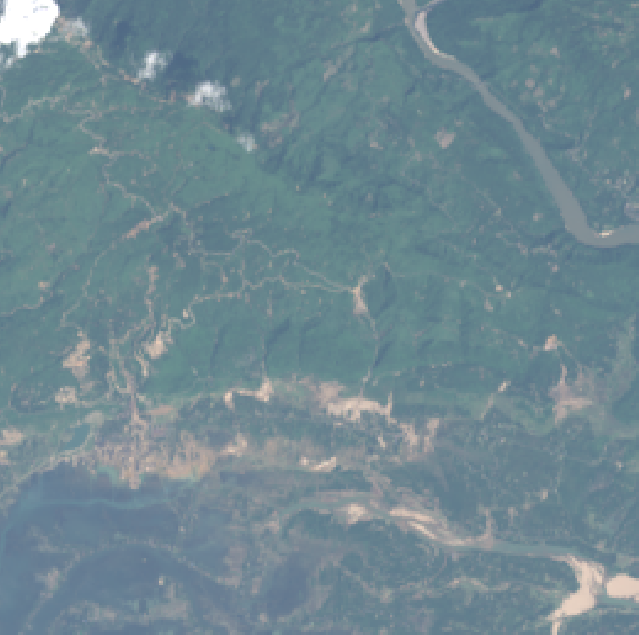
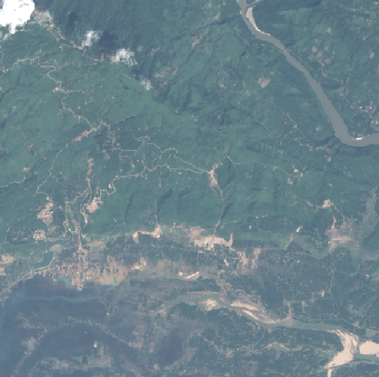
Computing NDVI
gdalinfo -stats ^
landsat8/RT_LC08_L1TP_137042_20190920_20190926_01_T1_2019-09-20_B4.TIFIt is important to set nodata value. As seen from the output above, nodata is set to -999.
gdal_calc ^
-A landsat8/RT_LC08_L1TP_137042_20190920_20190926_01_T1_2019-09-20_B5.TIF ^
-B landsat8/RT_LC08_L1TP_137042_20190920_20190926_01_T1_2019-09-20_B4.TIF ^
--outfile ndvi.tif --calc="(A-B)/(A+B)" --NoDataValue=-999
Georeferencing
Georeferencing images with corner coordinates
You can easily assign bounding box coordinates to any image using the a_ullr option.
gdalinfo earth_at_night.jpg
gdal_translate -a_ullr -180 90 180 -90 -a_srs EPSG:4326 ^
earth_at_night.jpg earth_at_night.tif ^
-co PHOTOMETRIC=RGB -co COMPRESS=DEFLATE
gdalinfo earth_at_night.tif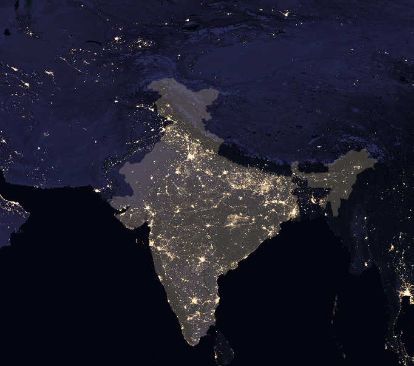
Georeferencing with GCPs
GCP format is [pixel line X Y]. You can use QGIS Georeferencer to obtain the GCPs. Ideally, this process is used with images that have known corner coordinates. In that case, if you know the image dimensions, pixel and line values can be obtained easily.
Let’s georeference this old scanned map.
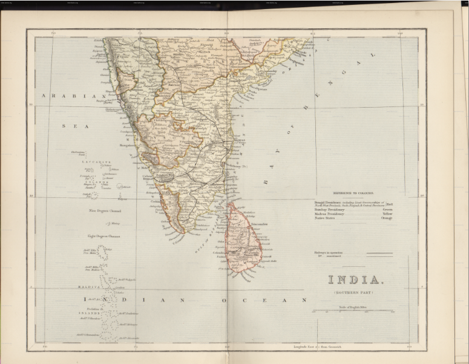
First store the GCPs in the file
gdal_translate ^
-gcp 418 893 70 15 ^
-gcp 380 2432 70 5 ^
-gcp 3453 2434 90 5 ^
-gcp 3407 895 90 15 ^
-gcp 2662 911 85 15 ^
1870_southern-india.jpg india-with-gcp.tifNext, reproject the image using the GCPs
gdalwarp -t_srs EPSG:4042 -r bilinear -tr 0.005 0.005 -overwrite ^
india-with-gcp.tif india-reprojected.tifTry a Thin-plate-spline transformation with some compression options.
gdalwarp -t_srs EPSG:4042 -tps -r bilinear -tr 0.005 0.005 -overwrite ^
india-with-gcp.tif india-reprojected.tif ^
-co COMPRESS=JPEG -co JPEG_QUALITY=50 -co PHOTOMETRIC=YCBCR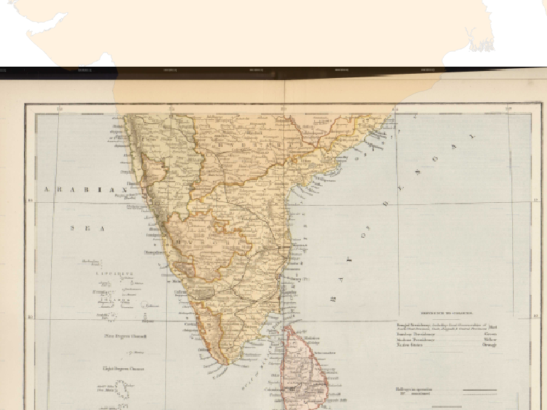
Processing of Aerial Imagery
Create a preview image from source tiles
gdalbuildvrt naip.vrt naip/*.jp2
gdal_translate -of JPEG -outsize 2% 2% naip.vrt naip_preview.jpg 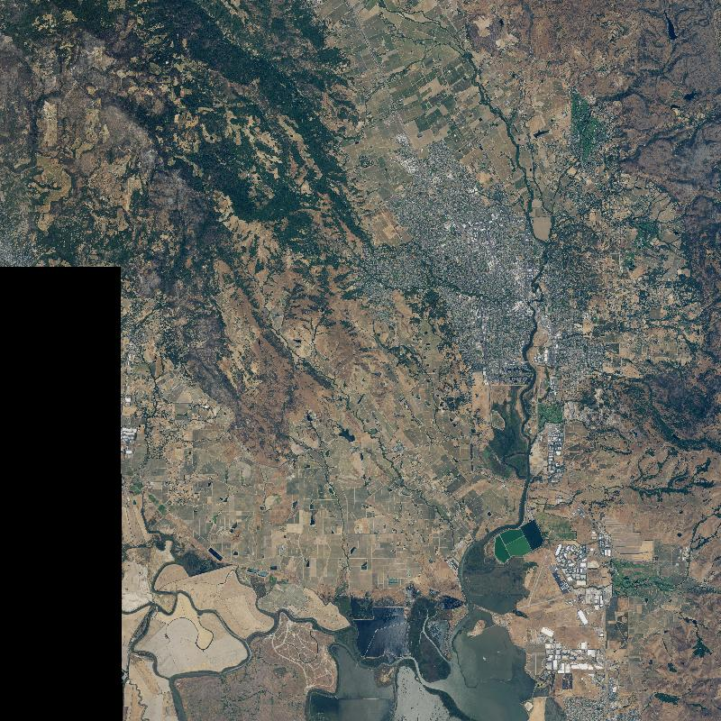
Select a subset of tiles
gdaltindex index.shp naip/*.jp2We have the area of interest defined in the aoi.shp file. We want to select and mosaic only the tiles intersecting our AOI
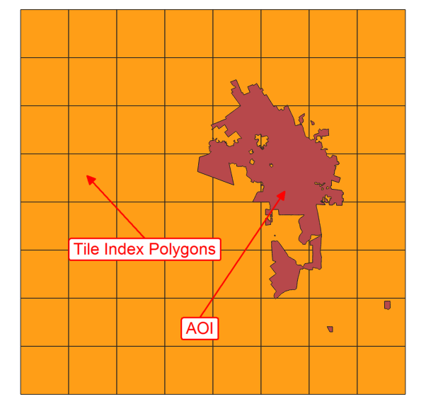
Select and save the intersecting tiles using Extract by Location Processing algorithm in QGIS and save the selection as a CSV file selection.csv.
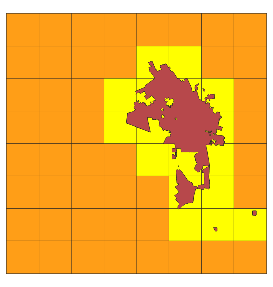
Edit the file to remove the header line. This creates a text file with source tile locations that can be supplied to the gdalbuildvrt command.
gdalbuildvrt -input_file_list selected.csv aoi.vrtMosaic and clip to AOI
gdalwarp -cutline naip/aoi.shp -crop_to_cutline aoi.vrt aoi.tif ^
-co PHOTOMETRIC=RGB -co COMPRESS=DEFLATE -dstnodata 0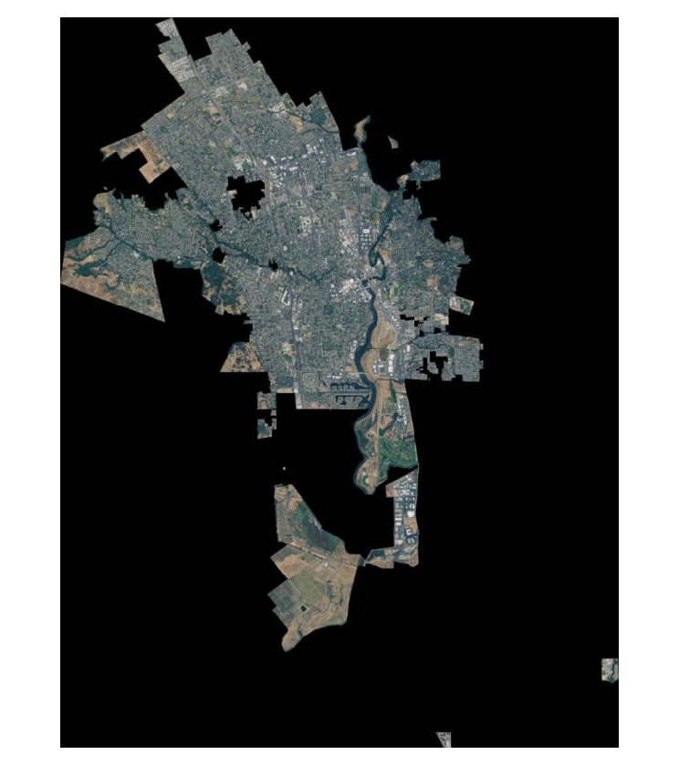
Multi Criteria Weighted Overlay Analysis
Multi-criteria analysis is the process of the allocation of land to suit a specific objective on the basis of a variety of attributes that the selected areas should possess.
Although this is a common GIS operation, it is best performed in the raster space. Below is the typical workflow to take source vector data, transform them to appropriate rasters, re-classify them and perform mathematical operations to do a suitability analysis.
The problem statement is Locate the suitable areas for development, that are
- Close to roads
- Away from waterbodies
- Not in protected areas
Rasterize vector layers
For overlay analysis, all rasters must be of the same extent. So we first find the extent of the dataset that we can use while rasterizing.
ogrinfo -so osm/assam.gpkg boundarygdal_rasterize -ot Int16 -burn 1 -tr 15 15 -te 170134 2669018 798842 3097324 ^
osm/assam.gpkg -l roads roads.tif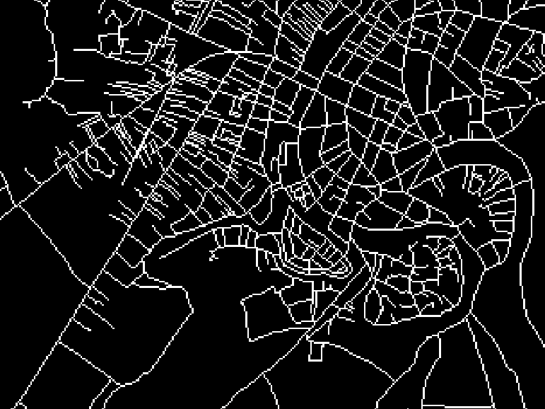
gdal_rasterize -ot Int16 -burn 1 -tr 15 15 -te 170134 2669018 798842 3097324 ^
osm/assam.gpkg -l boundary boundary.tifUse -i for inverse rasterization. We want to rasterize ‘un-protected’ areas
gdal_rasterize -i -ot Int16 -burn 1 -tr 15 15 -te 170134 2669018 798842 3097324 ^
osm/assam.gpkg -l protected_regions protected_regions.tifWe need a water layer, but the source data has a polygon and a polyline water features layer. We create 2 rasters and then add them to create a single water features raster.
gdal_rasterize -ot Int16 -burn 1 -tr 15 15 -te 170134 2669018 798842 3097324 ^
osm/assam.gpkg -l water_polygons water_polygons.tif
gdal_rasterize -ot Int16 -burn 1 -tr 15 15 -te 170134 2669018 798842 3097324 ^
osm/assam.gpkg -l water_polylines water_polylines.tif
gdal_calc -A water_polygons.tif -B water_polylines.tif ^
--outfile water_add.tif --calc="A+B"
gdal_calc -A water_add.tif --outfile water.tif ^
--calc="A>0"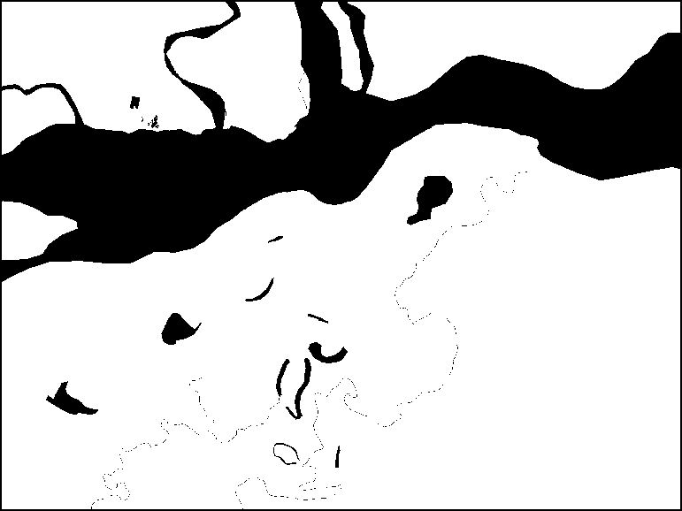
Generate proximity (Euclidean distance) rasters
gdal_proximity roads.tif roads_proximity.tif ^
-ot Int16 -distunits GEO
gdal_proximity water.tif water_proximity.tif ^
-ot Int16 -distunits GEO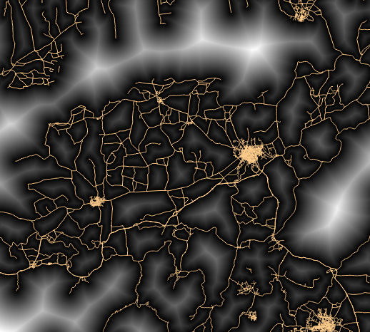
Re-classify raster values
Roads Give higher score to nearer pixels
0-1000m –> 100
1000-5000m –> 50
>5000m –> 10
gdal_calc -A roads_proximity.tif --outfile roads_class.tif ^
--calc="100*(A<=1000) + 50*(A>1000)*(A<=5000) + 10*(A>5000)"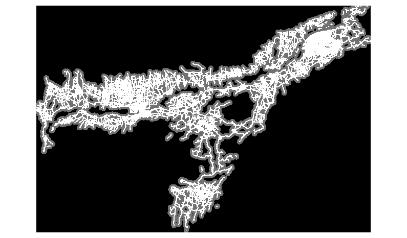
Water Give lower score to nearer pixels
0-1000m –> 10
1000 -5000m —> 50
>5000m –> 100
gdal_calc -A water_proximity.tif --outfile water_class.tif ^
--calc="100*(A>5000) + 50*(A>1000)*(A<=5000) + 10*(A<1000)"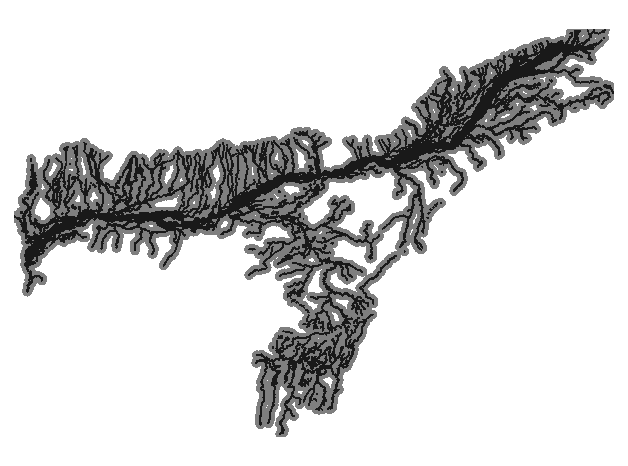
Overlay analysis
Roads and Water have a range of values, but protected areas are either 0 or 1. So we combine these together accordingly.
gdal_calc ^
-A roads_class.tif -B water_class.tif -C protected_regions.tif -D boundary.tif ^
--outfile suitability.tif --calc="(A + B)*(C>0)*D" --NoDataValue=0Smooth the output
gdalwarp -r cubicspline -tr 60 60 -dstnodata 0 ^
suitability.tif suitability_final.tif
Running commands in batch
You can run the GDAL/OGR commands in a loop using Python. Open OSGeo4W Shell and type the following to set the correct system paths
py3_envSay you want to convert the format of the images from JPEG200 to GeoTiff. You would run a command such as below.
gdal_translate -of GTiff -co COMPRESS=JPEG {input} {output}But it would be a lot of manual effort if you want to run the commands on hundreds of input files. Here’s where a simple python script can help you automate running the commands in a batch. The data directory contains a file called batch.py with the following python code.
import os
input_dir = 'naip'
command = 'gdal_translate -of GTiff -co COMPRESS=JPEG {input} {output}'
for file in os.listdir(input_dir):
if file.endswith('.jp2'):
input = os.path.join(input_dir, file)
filename = os.path.splitext(os.path.basename(file))[0]
output = os.path.join(input_dir, filename + '.tif')
os.system(command.format(input=input, output=output))In OsGeo4W shell, run the following command to start batch processing on all tiles contained in the naip/ directory.
python3 batch.pyThe data directory also contains an example of running the batch commands in parallel using python’s built-in multiprocessing library. If your system has multi-core CPU, running commands in parallel like this on multiple threads can give you performance boost over running them in series.
import os
from multiprocessing import Pool
from timeit import default_timer as timer
input_dir = 'naip'
command = 'gdal_translate -of GTiff -co COMPRESS=JPEG {input} {output}'
def process(file):
input = os.path.join(input_dir, file)
filename = os.path.splitext(os.path.basename(file))[0]
output = os.path.join(input_dir, filename + '.tif')
os.system(command.format(input=input, output=output))
files = [file for file in os.listdir(input_dir) if file.endswith('.jp2')]
if __name__ == '__main__':
start = timer()
p = Pool(4)
p.map(process, files)
end = timer()
print(end - start)
start = timer()
for file in files:
process(file)
end = timer()
print(end - start)The script runs the commands both in parallel and serial mode and prints the time taken by each of them.
python3 batch-parallel.pyData Credits
- OpenStreetMap (osm) data layers: Data/Maps Copyright 2019 Geofabrik GmbH and OpenStreetMap Contributors. OSM India free extract downloaded from Geofabrik.
- Landsat: Landsat-8 image courtesy of the U.S. Geological Survey. Image downloaded from Google Cloud Platform and pre-processed using Semi Automatic Classification Plugin from QGIS
- Earth at Night image: Credit: NASA Earth Observatory/NOAA NGDC. Earth at Night flat hi-resolution map downloaded from NASA earth observatory
- William Mackenzie 1870 map of Southern India: out-of-copyright scanned map downloaded from Hipkiss’s Scanned Old Maps
- NAIP 2016 Aerial Imagery for California: The National Agriculture Imagery Program (NAIP). USDA-FSA-APFO Aerial Photography Field Office. Downloaded from NRCS
License
This course is licensed under a Creative Commons Attribution 4.0 International License. You are free to use the material in any form as you wish. Kindly give appropriate credit to the original author.
© 2019 Ujaval Gandhi www.spatialthoughts.com